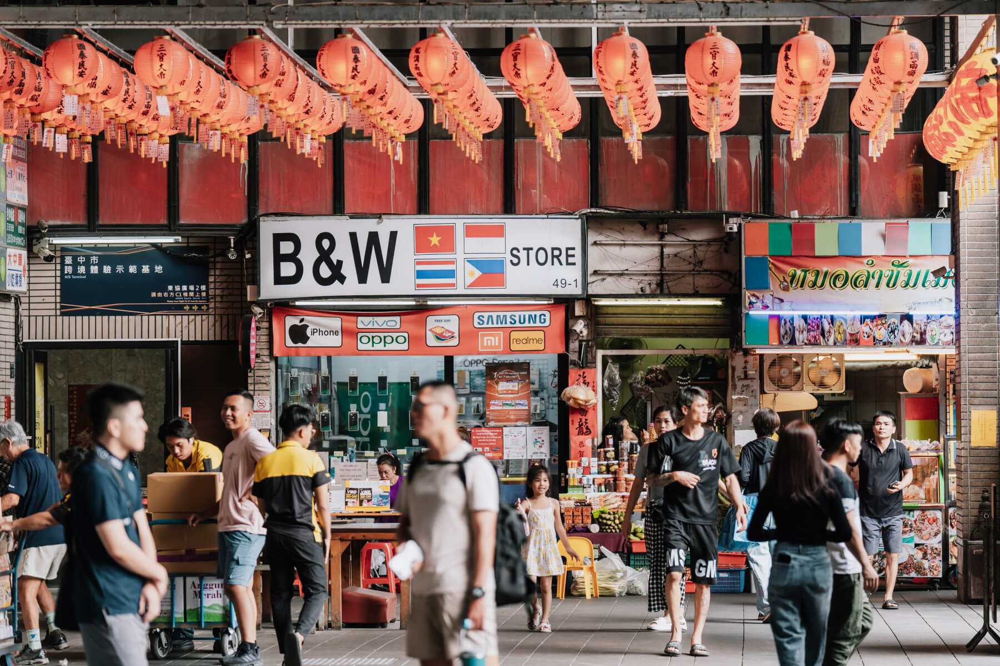

壹、專案執行摘要
近年來多元族群融合與舊城區活化成為城市發展核心。位於臺中舊城區的東協廣場，充滿異國多元族群的濃厚生活氣息。 然而目前商場客群多以外籍移工為主，台中人因資訊隔閡與治安標籤，對此地有一定的刻板印象。
本專案將東協廣場重新定位為「大學生低門檻微出國」，透過現況分析、競爭者分析、SWOT、STP 與 Vlog 短影音廣告執行， 引導臺中大學生重新看見東協廣場的文化多樣性與反差魅力，進而翻轉原有偏見、拓展全新視野！
專案推動的三大核心步驟 (有序清單 ol 範例)
- 現況調研與痛點挖掘：透過問卷與訪談確認大眾疑慮多源自網路二手傳聞。
- 策略定位與價值重塑：主打百元新手套餐與微出國平替感，降低心理門檻。
- 社群短影音與同儕揪團：運用 Reels 與 Threads 擴散，帶動實地踩點打卡。
貳、個案概述與選擇原因
東協廣場的獨特價值 (無序清單 ul 範例)
- 省時省錢：相較於出國需要昂貴機票與時間，東協廣場能以極低消費門檻提供異國探索體驗。
- 微出國平替感：品嚐道地越南法包、印尼炒麵與泰奶，獲得近似短暫出國的沉浸感。
- 反差魅力：將原本單純的移工生活圈轉化為青年輕鬆探索異國文化的質感據點。
參、現況分析與 SWOT 策略
根據我們進行的問卷調查顯示，高達 84.8% 的受訪者對於東協廣場的治安疑慮源自長輩與網路傳聞，並非親身經歷；且有 72.7% 的大學生表示「若好吃好玩會考慮前往」。
| 構面 | 核心內容摘要 | 策略因應方向 |
|---|---|---|
| S (優勢) | 不可複製的真實跨國文化脈絡、垂直一站式複合空間、緊鄰台中火車站交通樞紐。 | 主打「0機票平替出國」話題，吸引青年踩點。 |
| W (劣勢) | 硬體動線老化、長年負面標籤、平日人流量落差大、產權分散整合困難。 | 透過中文指引、友善店家標籤破除空間迷失。 |
| O (機會) | 臺中舊城再生政策、通膨推升零機票微出國熱潮、短影音與數位導覽普及。 | 發起 IG Reels 與 Threads 「#挑戰300元微出國」開箱挑戰。 |
| T (威脅) | 跨境電商與傳統市場分流、數位匯款普及削弱實體聚落黏著度。 | 以同儕揪團壯膽機制降低心理門檻。 |
肆、市場區隔與目標客群分析
本專案以「東南亞文化涉入程度」與「價格敏感程度」為核心劃分依據，將市場區分為四個子市場：
- 文化涉入高 × 價格敏感高：希望以有限預算獲得豐富文化體驗（本企劃核心目標）。
- 文化涉入高 × 價格敏感低：重視獨特性與文化深度。
- 文化涉入低 × 價格敏感高：喜歡新鮮事物，尋求低成本微旅行體驗。
- 文化涉入低 × 價格敏感低：重視社交話題與打卡趣味性。
最終鎖定 18~24 歲大學生作為主要溝通對象，運用同儕結伴壯膽與短影音視覺除魅，順利引導實地造訪。
伍、市場定位與十字定位
透過十字定位法（以「文化體驗深度」與「空間整合度」為軸線），東協廣場被精準定位在右上象限：全臺唯一的垂直一站式跨國微出國新手村。
我們避開了零散街邊店與傳統老市場的紅海，專注於提供高密度跨國元素的沉浸式社交與文化第三空間（The Third Place）。
陸、概念提案與廣告執行
我們規劃了 Vlog 探險短片《泰想續！東協大冒險》，講述主角心怡與小安在綠川水岸意猶未盡，前往東協廣場「出國續攤」的故事！

柒、實地位置地圖
東協廣場位於台中市中區（原第一廣場），緊鄰台中火車站與轉運站，交通極其便利。下方為 Google 地圖實地位置：
捌、參考資料與心得
參考文獻
- 吳振興 (2020)。《全球化下的城市族裔空間治理—臺中東協廣場案例研究》。彰化師範大學碩士論文。
- 彭杏珠 (2019)。移工大軍炒熱東協廣場 台中第一廣場復活了。遠見雜誌。
- 廖翊雯 (2024)。宛如置身東南亞:東協廣場的異國風情。《料理台灣》。
心得
文案、舞台劇導演-莊侑軒：「透過這次專題與網頁製作，我親身體會到打破刻板印象的過程，也成功將企劃完美數位化呈現！」
專題完成日期：2026 年 11 月 11 日。